引言
eclipse调试技巧总结
0、提要
- 不要使用System.out.println作为调试工具
- 启用所有组件的详细的日志记录级别
- 使用一个日志分析器来阅读日志
eclipse调试快捷键
F5 跳进当前执行的方法中（Step Into）
F6 跳过该行继续执行（Step Over）
F7 从方法中跳出继续执行（Step Return）
F8 全部运行通过，从调试状态中恢复（Resume）
Ctrl+R 运行当前选中行（Run to Line）
1、逻辑结构
逻辑结构主要用来展示map之类的collection数据结构存储的值的，它只展示存储值的逻辑部分，而屏蔽了数据结构详细的内部结构，更方便我们查看map之类collection结构里存储的值，推荐使用。
这个按钮就是展示逻辑结构的按钮，下面两个图，上图是不展示逻辑结构，下图是展示逻辑结构，很明显，下图的结构可读性更强，可以专注于debug的变量。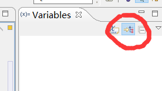
2、条件断点或条件debug
想象一下我们平时如何添加断点，通常的做法是双击行号的左边。在debug视图中，BreakPoint View将所有断点都列出来，但是我们可以添加一个boolean类型的条件来决定断点是否被跳过。如果条件为真，在断点处程序将停止，否则断点被跳过，程序继续执行。
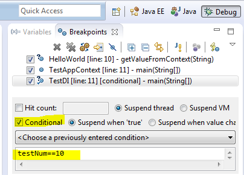
条件debug用在需要满足某种条件才会触发断点的场景，比如只有id是12345这条记录会有问题，那就当id等于12345时才触发断点，其他都放过。
右击断点选择断点属性，就能看到这样一个配置框，右边的文本区块可以填写条件代码，比如id==12345
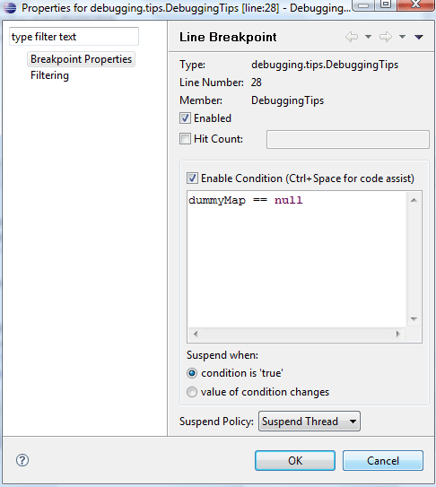
3、异常断点
异常断点只要用在debug某种异常的时候，可以配置当这个异常出现后才触发断点，不需要debug去寻找异常。
点击这个红圈就能弹出异常断点的窗口，会列出你系统里的所有异常类，然后选择需要断点的异常就OK
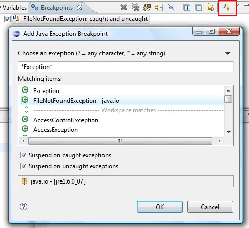
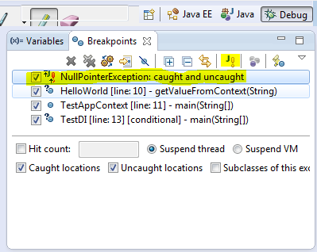
4、观察点
他允许当一个选定的属性被访问或者被更改的时候程序执行暂停，并进行debug。最简单的办法是在类中声明成员变量的语句行号左边双击，就可以加入一个观察点。
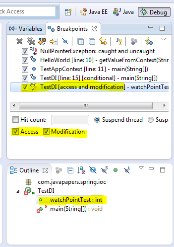
5、查看变量
在选中的变量上使用Ctrl+Shift+D 或者 Ctrl+Shift+I可以查看变量值，另外我们还可以在Expressions View中添加监视。
6、改变变量值
我们可以在Debug的时候改变其中变量的值。在Variables View中可以按下图所示操作。
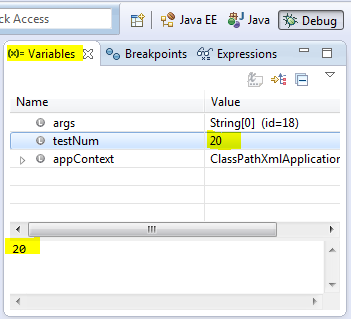
7、在Main方法中停止
在Run/Debug设置中，我们可以按如下图所示的启用这个特性。程序将会在main方法的第一行停住
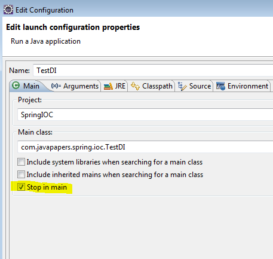
8、环境变量
我们可以很方便的在Edit Conriguration对话框中添加环境变量
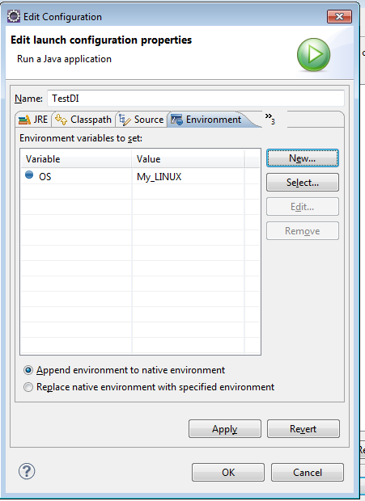
9、单步过滤
单步过滤的场景是我们在使用F5来跟到某个方法内部的时候，经常会跟到一些我们确定不需要看的方法内部。
this.getTradeDetail(uid, itemStr.subString(0,5))
比如这行代码，想F5进入getTradeDetail内部，会首先执行itemStr.subString方法，会先进入subString方法，而这方法是JDK的String方法，确定没问题，不需要关心，单步过滤就是跳过这些我们想忽略的方法直接到目标方法内部的一种debug技巧。
在Window > PreferencesJava > Debug > Step Filtering 设置过滤器, 可以选择需要过滤掉的包和类。同时要确保你在debug视图中启用了单步过滤，如下图。这样在使用单步调试的时候，就会使用到这个过滤功能。
上图是过滤器配置，典型的就是把JDK的一些类和包配置过滤。下图是要在debug时候开启单步过滤，否则不生效。

10、跳出帧Drop to frame
跳到帧是一种重入技巧，在debug时，eclipse可以直接跳到调用栈中指定的任意桢，并且使JVM在此处重新运行。这使你可以重新运行你的部分代码，而不需要为了调试之前的代码而重新来一次。
要注意的是：已经被修改的变量不会被重置，它们会保留当时的值。
Drop to frame就是说，可以重新跳到当前方法的开始处重新执行，并且所有上下文变量的值也回到那个时候。不一定是当前方法，可以点击当前调用栈中的任何一个frame跳到那里（除了最开始的那个frame）。主要用途是所有变量状态快速恢复到方法开始时候的样子重新执行一遍，即可以一遍又一遍地在那个你关注的上下文中进行多次调试（结合改变变量值等其它功能），而不用重来一遍调试到哪里了。当然，原来执行过程中产生的副作用是不可逆的（比如你往数据库中插入了一条记录）。
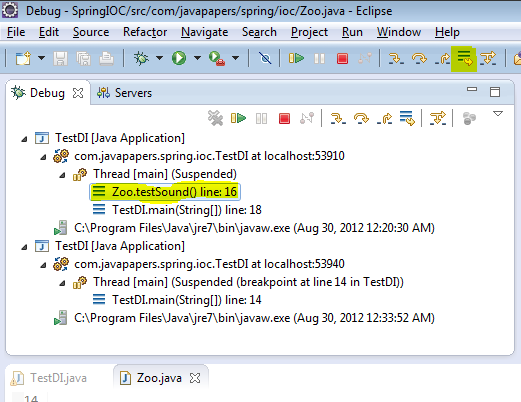
使用方式：选择调用栈中的一桢，点击按钮“跳到桢”
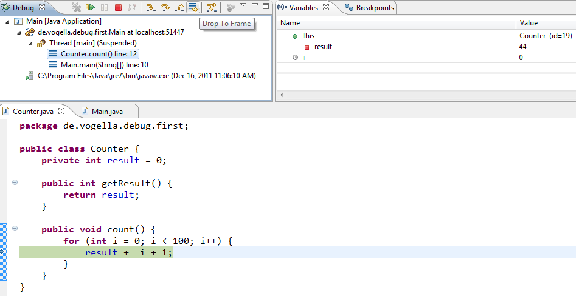
11、Inspect
inspect用来查看某个表达式的值，对于变量值debug很容查看，但是对于一个表达式的值就不容易查看，还是这句：
this.getTradeDetail(uid, itemStr.subString(0,5))
想看getTradeDetail的值，就没法想看变量值一样（虽然这个很有可能是赋值给一个变量…），要看这种表达式值，就需要inspect，具体做法是选中这行表达式，然后右击->inspect,或者更方便的快捷键组合：ctrl+shift+I,会弹出如下的展示表达式结果的框：
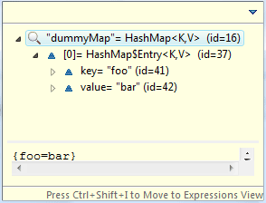
12、expressions
expressions窗口也是用来看变量或者表达式的值的，在windows->show viewz中打开expression窗口，然后在里面添加你想观察的表达式，比如还是这句：
this.getTradeDetail(uid, itemStr.subString(0,5))
然后debug的时候，就能看到被添加的表达式结果了，另外也能根据需要改value的值。
13、display
display也是用来观察和修改变量or表达式的，这个应该用的人比较多，在windows->show view中打开display窗口，可以在display窗口里写表达式，然后右击选择display运行查看结果或者ctrl+shift+D快捷键组合，表达式可以是程序中一行代码或者你自己写的一个赋值语句来改变变量值之类的。
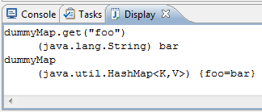
14、远程debug
远程debug可以用来调试远程服务器上的代码，保证你本地代码和远程部署的代码是一致，就可以通过这种方式debug服务器代码，这个是java web开发的一大利器，否则定位服务器问题简直是灾难。
远程debug需要服务器端启动jvm的时候做一些开启和端口的配置，具体的配置网上很多，搜一下即可。然后在本地的debug configuration中双击添加一个remote java application，填写远程主机的host和配置的debug端口，就可以开始debug了，如下图：
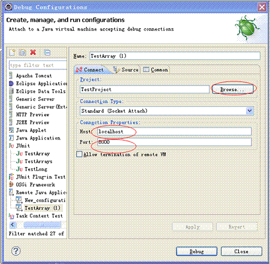